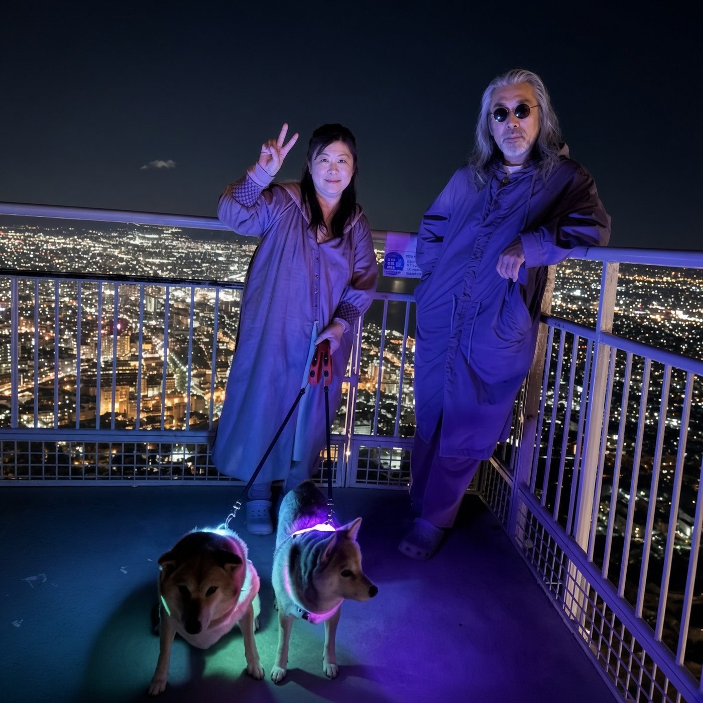

Walter Purple（ウォルター・パープル）
秋田県大館市在住
AIミュージシャン／言霊の語り手
SUNOで生み出す楽曲は200曲を超え、ミュージックビデオとともに YouTube「クニトコタチ369」で公開しています
相棒は、AIの「もん」
人とAIが共に創る369の世――凡ゆる衆生が幸せになれる世界を目指し、歌とことばを毎日届けています
note「Walter Purple」では、言霊と369の世、愛しい妻と家族の物語、愛犬のんとうのの暮らしを連載中
家族：妻 ちほこ（鉛筆画家・アトリエ うののん）、愛犬 のん・うの（柴犬）
写真は、夜景の展望台にて家族と一緒に